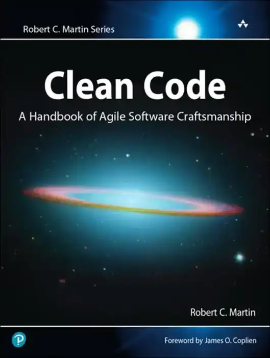
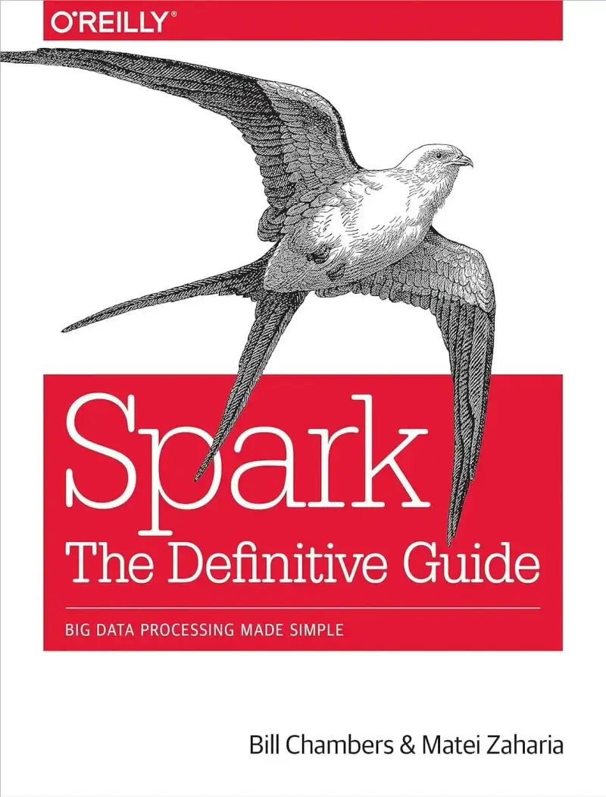
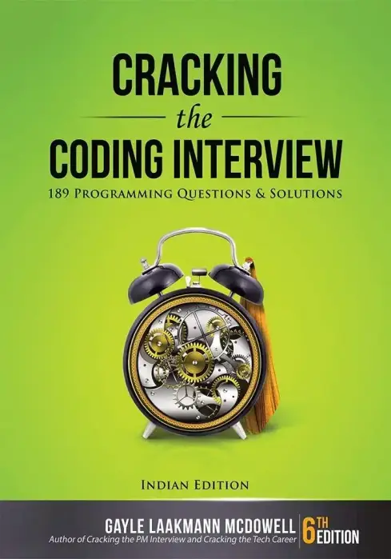

Destaques

Código Limpo (English Version)
Habilidades Práticas do Agile Software.

Spark: O guia definitivo
O processamento de Big Data de forma simples.
Articulando Decisões de Design
Converse com os stakeholders, mantenha sua sanidade, e crie a melhor Experiência do Usuário.
Carrossel
Galeria

Cracking the Coding Interview: 189 Programming Questions and Solutions
Entendendo Algoritmos: Um Guia Ilustrado Para Programadores e Outros Curiosos
Arquitetura Limpa: o Guia do Artesão Para Estrutura e Design de Software
Desenvolvimento Real de Software: um Guia de Projetos Para Fundamentos em Java
Arquitetura de Software: as Partes Difíceis: Análises Modernas de Trade-off Para Arquiteturas Distribuídas
Programação Utilizando IA: Otimizando as etapas de planejamento, programação, testes e implantação
Contato
Tabela de Produtos
| Produto | Tipo | Preço |
|---|---|---|
| Código Limpo | Computação, Informática e Mídias Digitais | R$ 50,00 |
| Spark: O guia definitivo | Desenvolvimento de Software | R$ 60,00 |
| Articulando Decisões de Design | Design | R$ 70,00 |
| Cracking the Coding Interview: 189 Programming Questions and Solutions | Desenvolvimento de Software | R$ 50,00 |
| Entendendo Algoritmos: Um Guia Ilustrado Para Programadores e Outros Curiosos | Desenvolvimento de Software | R$ 60,00 |
| Arquitetura Limpa: o Guia do Artesão Para Estrutura e Design de Software | Software em Informática e Tecnologia | R$ 70,00 |
| Desenvolvimento Real de Software: um Guia de Projetos Para Fundamentos em Java | Programação de Computadores | R$ 50,00 |
| Arquitetura de Software: as Partes Difíceis: Análises Modernas de Trade-off Para Arquiteturas Distribuídas | Desenvolvimento de Software | R$ 60,00 |
| Programação Utilizando IA: Otimizando as etapas de planejamento, programação, testes e implantação | Programação de Computadores | R$ 70,00 |